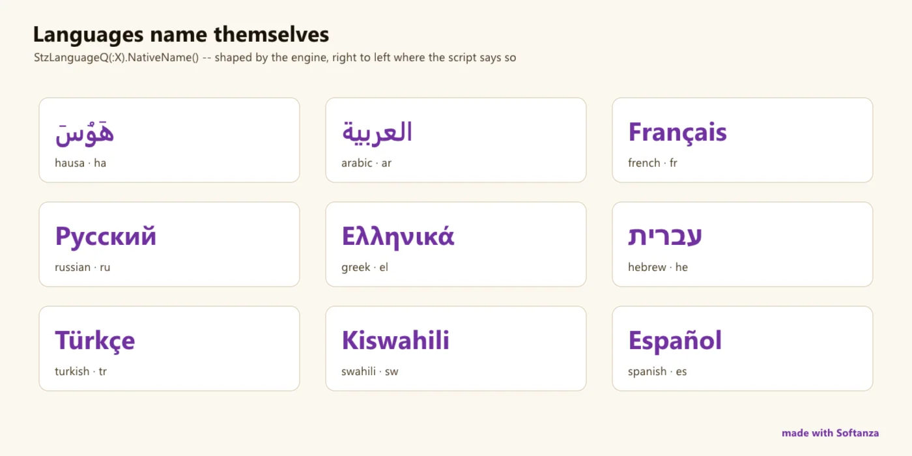

Une locale dit comment une valeur s'écrit ; une culture dit comment elle sera lue. Softanza tient les deux à part, et refuse de déduire un sens d'un seul code de locale.
Les données sont possédées et versionnées : 261 pays, 323 langues, 143 écritures, 495 abréviations de locales, générées hors ligne et estampillées de leur source, pour qu'une locale se résolve sans rien télécharger. Une locale connaît le code ISO de sa monnaie et le signe que les gens écrivent, et le nom de sa langue dans cette langue ; la locale iranienne commence sa semaine le samedi et nomme le jour en persan. Dates et heures sont portées par le moteur, avec une construction validée, des allers-retours ISO 8601 et une quarantaine de formats nommés.
o1 = new stzLocale("fr_FR")
o2 = new stzLocale("fa_IR")
# a locale knows its currency, and its language's name in that language
? o1.CurrencyAbbreviation()
#--> EUR
? o2.LanguageNativeName()
#--> فارسی
exécuté dans la bibliothèque le 2026-10-20
Vient ensuite ce que la plupart des bibliothèques n'ont pas : le temps est modélisé, pas seulement mesuré. Une seule stzTimeLine tient les événements, les plages et les fenêtres bloquées, vérifie chaque insertion contre elles, et se dessine ; stzCalendar connaît les jours ouvrés, les fériés, les trimestres, les sprints et la capacité. Un événement placé dans une fenêtre de maintenance est refusé à l'instant où on l'ajoute.
o1 = new stzTimeLine("2024-01-01", "2024-12-31")
cFrom = "2024-08-01 00:00:00"
cTo = "2024-08-08 23:59:59"
o1.AddBlockedSpan("BLACKOUT", cFrom, cTo)
# no event may be added during the blackout
? o1.IsBlocked("2024-08-05 14:30:00")
#--> TRUE
? o1.IsBlocked("2024-09-05 14:30:00")
#--> FALSE
exécuté dans la bibliothèque le 2026-10-20
StzCalendarQ([2024, 10]) {
SetWorkingDays([
"Monday", "Tuesday", "Wednesday", "Thursday", "Friday"
])
# Thu 2024-10-03 is a working day
? IsWorkingDay("2024-10-03")
#--> TRUE
# Sat 2024-10-05 is not a working day
? IsWorkingDay("2024-10-05")
#--> FALSE
# October 2024 has 23 working days
? len(WorkingDays())
#--> 23
}
exécuté dans la bibliothèque le 2026-10-20
C'était un pari délibéré contre ICU : pas de dizaines de mégaoctets de C++ et de données CLDR. Le pari a un prix que la page nomme clairement. Pas de collation par locale, pas de règles de pluriel ni de formatage de messages, pas de catalogue de traduction, pas de base de fuseaux horaires, pas d'autre calendrier que le grégorien. Quatre couloirs sont notés Solid, quatre Partial, quatre Emerging. Le prochain plan « culture » ajoute la moitié manquante du principe : une opération honore la culture qu'on lui a donnée, ou refuse, parce qu'ignorer une locale en silence ressemble à un succès et rend un texte faux.

neuf langues qui se nomment dans leur propre écriture. rendu le 2026-10-01 à 04:00 par le script de rendu du site tools/areas.ring, exécuté dans la bibliothèque au commit 0e72e2e2c · la source(s'ouvre dans un nouvel onglet)
Où il en est
La lecture du Compas Softanza : chaque couloir du domaine noté face au meilleur de sa catégorie, d'après ce que les gardes prouvent (Read from the source on 2026-09-16). Les phrases du Compas sont en anglais, telles qu'il les a écrites.
This module is a deliberate bet against ICU. Rather than vendor tens of MB of C++ and CLDR data, Softanza ships broad hand-tables (261 countries, 323 languages, 143 scripts, Qt-sourced), a solid engine-backed datetime core with rich Haro-side formatting, and a distinctive business/holiday calendar. But that same choice leaves the CLDR crown jewels absent: no locale collation, no ICU MessageFormat or plural rules, no translation catalog, no locale-aware number/currency formatting, no timezone database (ToUTC is a no-op), and no non-Gregorian calendars. The data and the datetime basics are solid; almost everything that makes ICU, Babel and Luxon what they are is still owed.
The honesty line on the ratings. The clean-loading test dirs pass — time, timeline (54), timex, i18n, script, and locale (81/94) — and the engine Zig tests guard currency and datetime. But datetime, date, calendar and currency report large ERR counts that are all one C22 runner-load collision, not per-assertion failures, so those lanes' guards can't fully vouch until it's fixed. The engine locale functions (casing, AM/PM, number, day names) remain English/ASCII/US stubs.
The one-sentence position. Softanza traded ICU's weight for owned, committed data — and it shows on both sides: broad reference tables and a solid, well-formatted Gregorian datetime with a standout business calendar, but none of the CLDR machinery (collation, plural/message formatting, timezones, locale number formatting, multiple calendars) that the category leaders are defined by.
A business/holiday calendar with sprint and capacity planning that most i18n libraries lack
An engine-backed datetime core with validated construction
Natural-language epoch parsing (FromNaturalEpoch)
Ce qui est dû
A timezone database (IANA/Olson zones, offset math, DST)
Locale-aware number and currency formatting over the hint tables that already ship
Fix the datetime / date / calendar / currency C22 test-runner collision (~450 assertions)
Locale-aware collation, CLDR plural rules and a translation catalog
Repensé depuis les premiers principes
Ce que Softanza a gardé de ce qui marche, et ce qu'elle a repensé, tel que la bibliothèque l'a écrit dans ses documents de conception et ses narrations.
La manière SoftanzaUne locale dit comment une valeur s'écrit ; une culture dit comment elle sera lue, et aucun sens ne peut se déduire d'un seul code de locale.
Gardé des meilleures pratiques
Des identifiants standard : les locales se créent à partir d'étiquettes de langue IETF comme ar-TN, et les devises se repèrent par leur code ISO. source(s'ouvre dans un nouvel onglet)
L'ISO 8601 pour l'échange de données et les journaux ; l'horloge de 24 heures par défaut, pour la précision et la clarté internationale. source(s'ouvre dans un nouvel onglet)
La normalisation Unicode dans ses quatre formes standard et la détection d'écriture viennent de la bibliothèque Unicode partagée, pas de tables maison. source(s'ouvre dans un nouvel onglet)
Repensé
Pas d'ICU : seules les données de locale réellement utilisées sont générées hors ligne et versionnées avec leur source, ce qui évite des dizaines de mégaoctets de dépendance. source(s'ouvre dans un nouvel onglet)
Une locale met en forme, une culture interprète : un sens comme rouge-égale-perte ne se déduit jamais d'un code de locale, car le rouge signifie le gain dans certaines cultures financières. (prévu)source(s'ouvre dans un nouvel onglet)
Pas de façade : une opération respecte la culture reçue ou refuse, car ignorer une locale en silence ressemble à un succès et renvoie un texte faux. (prévu)source(s'ouvre dans un nouvel onglet)
Le temps se modélise, pas seulement se mesure : un seul objet chronologie réunit événements, périodes et zones bloquées, les vérifie à l'insertion et les dessine, au lieu d'outils raboutés. source(s'ouvre dans un nouvel onglet)
La manière Softanza, exécutée
Ce que Softanza fait autrement dans ce domaine, montré par du code tiré de ses narrations et de ses gardes, et exécuté pour cette page.
Une locale connaît à la fois le code ISO de sa devise et le signe qu'on écrit vraiment, tirés d'une seule table du moteur.
Softanza
oFr = new stzLocale("fr_FR")
Then("the ISO code is the ISO code", oFr.CurrencyISOSymbol(), "EUR")
Then("...and the symbol is the euro sign", oFr.CurrencySymbol(), "€")
Sortie
THEN the ISO code is the ISO code [PASS]
THEN ...and the symbol is the euro sign [PASS]
Une locale iranienne commence la semaine le samedi et nomme ce jour en persan.
Softanza
oFa = new stzLocale("fa_IR")
Then("the language itself resolves", oFa.LanguageName(), "persian")
Then("...and its first day is Saturday, as Iran counts it", oFa.NthDayOfWeek(1), "saturday")
Then("...named in Persian, not English", oFa.NativeNthDayOfWeek(1), "شنبه")
Sortie
THEN the language itself resolves [PASS]
THEN ...and its first day is Saturday, as Iran counts it [PASS]
THEN ...named in Persian, not English [PASS]
12 couloirs, chacun face au meilleur de sa catégorie
Pour chaque couloir : ce qui tourne dans le moteur aujourd'hui, les outils contre lesquels il est juste de le mesurer, et ce qui reste dû.
01Locale identity & reference dataSolid
In the engine
Broad tables: 261 countries, 323 languages, 143 scripts, 495 locale abbreviations, with language↔country↔script defaults (stzLocale, stzCountry, stzLanguage, stzScript), now mirrored into an engine SQLite layer (ref_data.zig / i18n.db).
Measured against
ICU / CLDRBabel
To complete
Row coverage rivals CLDR, but the data is Qt-sourced, not CLDR, "native" names are romanized English, and Haro and engine hold parallel copies (L2 cutover incomplete).
02Date / time types & arithmeticSolid
In the engine
stzDate / stzTime / stzDateTime are engine-backed (datetime.zig): components, leap/day-of-year, add-days, diff, compare, is-between, ISO and Unix round-trips. Validated construction (invalid dates return null).
Measured against
LuxonTemporalICU calendar
To complete
Month/year addition is done Haro-side (no engine add-months), and every value is naive wall-clock — the offset math a real datetime type carries lives in the timezone gap (lane 9).
03Date / time formatting & parsingSolid
In the engine
Rich Haro-side formatting: ~40 named formats (:ISO8601, :European, :Verbose, :Compact12h…) over Qt/Unicode pattern tokens, plus multi-format parsing and natural-language epoch parsing (FromNaturalEpoch).
Measured against
LuxonBabelstrftime
To complete
All Haro-side — the engine stz_date_format ignores its format string and always emits ISO. No CLDR skeleton formats, and formatting is not locale-tailored beyond the named presets.
04Business & holiday calendarSolid
In the engine
stzCalendar — a genuinely rich Gregorian working-days / holiday calendar: quarters, weeks, working-day arithmetic, holidays, capacity and sprint planning, with a heat-map view. Plus an engine-backed stzTimeLine.
Measured against
workalendarbizdayspandas bdate_range
To complete
A distinctive plus most i18n libraries lack — but pure Haro, Gregorian-only, and its test directory currently can't run (lane note below).
05CurrencyPartial
In the engine
Engine-backed (the L1 cutover): stz_locale_currency_iso / _symbol over 143 rows, guarded by a "no row answers its own ISO code" property test.
Measured against
ICUBabel numbersIntl.NumberFormat
To complete
Symbol / ISO lookup only — no amount formatting with locale placement, spacing, grouping or minor-unit rules. The actual currency-formatting job is not done.
06Number formattingPartial
In the engine
StzFormatNumber formats with grouping and decimals — and Haro holds per-locale decimal/group-separator hint tables (~30 languages).
Measured against
ICU NumberFormatIntl.NumberFormatBabel
To complete
Not locale-aware: the engine formatter hardcodes US ,/. and never reads the hint tables. The data exists; wiring it in is the whole gap.
07Native names & per-locale textPartial
In the engine
Native day and month names for 11 languages (english, french, arabic, persian — now native-script — spanish, german, portuguese, italian, russian, turkish, dutch), via NamesOfDaysIn / NamesOfMonthsIn.
Measured against
CLDR (hundreds of locales)Babel
To complete
Eleven of hundreds — everything else falls back to English, and the engine day_name still takes a number and no locale (the L3 work). Reference "native" names elsewhere are romanized.
08Calendar systemsPartial
In the engine
Proleptic Gregorian only, hardcoded in datetime.zig (gregorianToJulian and back). The business calendar above is the depth on this single system.
Measured against
ICU (Hijri / Persian / Hebrew / Buddhist / Japanese)Luxon
To complete
No Hijri, Persian, Hebrew, Buddhist or Japanese calendars — a notable absence given the library's strong Arabic/Persian typography elsewhere.
09TimezonesEmerging
In the engine
None. Datetimes are naive wall-clock — ToUTC() and ToLocalTime() are no-ops that copy the components unchanged.
Measured against
Luxon (IANA)ICU / tz databasemoment-timezone
To complete
An IANA/Olson timezone database, offset math and DST. Without it, no correct cross-zone arithmetic — the single biggest gap against Luxon.
10Collation (locale-aware sorting)Emerging
In the engine
None. The only "collate" in the tree is SQLite COLLATE NOCASE (ASCII case-insensitive lookup), not linguistic collation.
Measured against
ICU Collator (the crown jewel)Intl.Collator
To complete
Locale-aware sorting is ICU's headline feature and is entirely absent — shared with the String page's top gap. The one thing that most defines an i18n library.
11Message formatting & pluralizationEmerging
In the engine
None. The only plural handling is an English singular/plural pair for duration wording in stzDuration.
No ICU MessageFormat, no CLDR plural rules (one/few/many/other), no gender/select — the machinery real translation depends on.
12Translation / message catalogEmerging
In the engine
None. No gettext, no .po / .mo, no message catalog anywhere in the group.
Measured against
gettextBabel catalogsi18next / Fluent
To complete
A catalog format and lookup — the actual "translate a string into locale X" surface. Everything above is locale data; there is no translation layer yet.
Ce qui est dû, dans l'ordre du rendement
Les manques, classés par ce qu'ils rapportent et non par leur taille ; la valeur est l'effet sur la portée de la bibliothèque, l'effort une lecture d'ingénieur.
Tier A — foundational
A timezone database
IANA/Olson zones, offset math and DST, so ToUTC / ToLocalTime stop being no-ops and cross-zone arithmetic becomes correct. The single biggest gap against Luxon, and a precondition for any global scheduling use.
Valeur · élevéeEffort · élevé
Locale-aware number & currency formatting
Wire the existing decimal/group-separator hint tables (and currency placement/minor-unit rules) into the engine formatter. The data already ships; the formatter just hardcodes US — a high-leverage fix over existing tables.
Valeur · élevéeEffort · moyen
Tier B — cheap and high-leverage
Fix the datetime test-runner collision
The datetime / date / calendar / currency dirs error en masse on one C22 Function redefinition load collision — not logic failures. Fixing it lets those ~450 assertions actually vouch for the lanes.
Valeur · élevéeEffort · faible
CLDR plural rules + minimal MessageFormat
Generate the CLDR plural categories offline (as the "not ICU" decision already does for other data) and a small MessageFormat parser — the base translation real apps need.
Valeur · moyenneEffort · moyen
Broaden native day/month names
Lift the 11-language ceiling by generating names from the offline source, and give the engine day_name a real locale argument (the L3 work).
Valeur · moyenneEffort · faible
Tier C — the CLDR reach
Locale-aware collation
The crown jewel — locale sorting via a generated CLDR collation subset. Shared with the String page's top gap; closing it once serves both.
Valeur · élevéeEffort · élevé
Non-Gregorian calendars
Hijri, Persian and Hebrew at least — conspicuously missing given the library's strong Arabic/Persian typography elsewhere.
Valeur · moyenneEffort · élevé
A translation catalog + finish the engine cutover
A gettext-style or Fluent-style message catalog, and completing L2–L4 so the engine registry (already built) retires the parallel Haro tables and becomes the single source of truth.
Valeur · moyenneEffort · moyen
La conception, telle que la bibliothèque l'a écrite (1)
Les documents de conception de ce domaine, lus dans le dépôt au commit 4a184e6f0 : ce que chacun est, son plan, et le lien vers le texte entier.
SOFTANZA CULTURE PLAN — analysis and phased plan (CU0–CU5)
387 lignes · 12 sections · écrit le 2026-08-18
Une analyse et un plan (CU0 à CU5, non commencé) pour un module culture, dont la loi est qu'une locale formate et qu'une culture interprète : aucun appel ne retourne un sens d'un identifiant de locale seul, et une opération honore sa culture ou refuse.
Le plan
HOW TO USE THIS DOCUMENT (session bootstrap — read this first)
0. The facts that shape everything (surveyed 2026-08-18)
0.5 Lessons inherited from the sibling planes (each already paid for)
Les narrations que la bibliothèque a écrites sur ce domaine, chacune exécutée bloc par bloc avant d'être publiée ici.
Software Global Reach: Locale Management the Softanza Way2025 · feature essayThe Softanza library for Haro brings a refreshingly intuitive approach to locale management, wrapping the Softanza Engine's powerful internationalization capabilities in an API that feels natural and expressive.
Les classes de ce domaine (13)
Chaque classe mène à sa page de référence : ses méthodes, chacune avec un exemple exécuté.